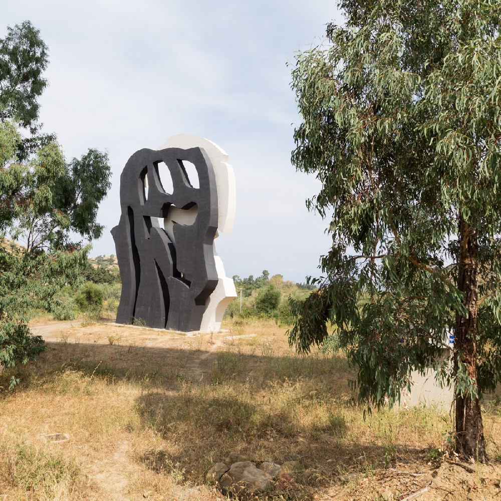

La materia poteva non esserci
Scopri l'artista
L'installazione 'La materia poteva non esserci' di Pietro Consagra, realizzata nel 1986, è una scultura monumentale di 18 metri in cemento armato dipinto, commissionata da Antonio Presti per commemorare la morte del padre. Consagra, un artista siciliano che ha trovato la sua dimensione artistica a Roma, è noto per il suo contributo al formalismo e all'astrattismo, con una preferenza per la forma del rilievo.
La scultura, parte della serie degli 'addossati', è composta da due elementi di colori opposti che si ergono sul greto del torrente Tusa. Le curve della scultura, leggere e evocative della natura circostante, rappresentano acqua e vento. Tra l'elemento bianco e quello nero, uno spazio praticabile di 80 cm invita a sollevare lo sguardo verso il cielo, incoraggiando una riflessione sulla materia e sulla sua intrinseca spiritualità, nonostante l'alleggerimento della terza dimensione.
Nel 1990, l'opera è stata oggetto di un'ordinanza di demolizione per violazione della legge Galasso sui beni ambientali. Tuttavia, la scultura è stata preservata grazie all'appello presentato da Presti alla Corte di Messina, con il reato che, col passare degli anni, è caduto in prescrizione. Questo episodio ha contribuito a ispirare la creazione di un parco d'arte, con Presti che, dopo un colloquio con l'artista Tano Festa, ha avuto l'idea di donare alla gente, alla Sicilia e al mondo un regalo di bellezza.
La materia poteva non esserci è stata la prima installazione della Fiumara d'Arte e ha dato il via al progetto stesso. Composta da due forme parallele, una bianca e una nera, la scultura simboleggia il rapporto tra l'uomo e l'ambiente, collocata nel letto prosciugato del fiume Tusa. L'opera crea un equilibrio tra spazi vuoti e pieni, con uno spazio tra le due forme che può essere attraversato, quasi come una 'porta' verso un passato arcaico.